Repository of mechanistic models for human mobility. Includes implementations of mobility models (e.g., gravity, radiation, and intervening opportunities) for predicting daytime population density with calibration and validation on real mobility data.
Comparative analysis of supervised classification algorithms (Minimum Distance, SAM, Maximum Likelihood, KNN, SVM) on satellite imagery of larch forests and disturbed lands. Includes full error matrices and accuracy assessment.
🌡️ Urban Heat Island Mitigation Strategies (Heliopolis, Cairo)
Geospatial analysis of the UHI effect using Landsat 9 L2 thermal data, combined with an integrated urban design proposal. Completed at the Bauhaus-Universität Weimar Summer School 2025. Identified overheating hotspots and developed mitigation strategies: green infrastructure, high-albedo surfaces, retractable canopies, and drinking fountains.
Detailed classification of industrial and natural landscapes.
QGIS
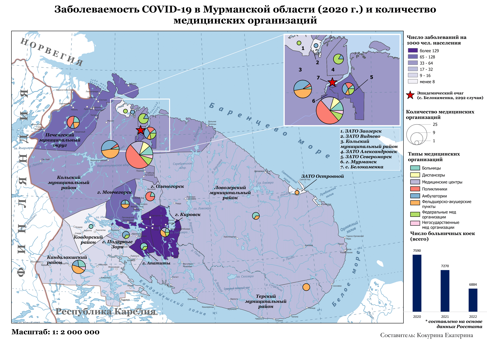
COVID-19
';">
COVID-19 Morbidity
Morbidity rates and medical infrastructure (2020).
QGIS
📄 Curriculum Vitae
Ekaterina Kokurina
19/02/2005 · katya.kokurina2005@gmail.com
🎓 Education
BSc in Geography of Global Changes and Geoinformation Technology
HSE University, Moscow, Russia (2023–2027)
Russian-British School, Moscow (2019–2021)
IGCSEs (June 2021): Grade 9 – Science (Double Award), Grade 9 – English as a Second Language, Grade 8 – Spoken Language, Grade 9 – Mathematics
Moscow City School № 1210 (2012–2023)
High School Diploma with Honors (2023)
General Secondary School Diploma (Attestat) with Honors (2021)
Russian National Exam: top marks in Mathematics, Geography, Russian Language, and English Language
Internships & Exchange Programmes
July 2026 — Universidad Autónoma de Madrid: A Multidisciplinary Approach to Climate Change
August 2025 — Bauhaus-Universität Weimar: Urban Heat Islands: Understanding the Context of Climatic, Cultural and Physical Conditions in Urban Environments
July 2024 — ELTE Budapest Summer University: Re-imag(in)ing Environmental Issues
July 2022 — University of Amsterdam: Pre-University Honours Programme: International Relations
💼 Experience
Geospatial ML Engineer (Internship) · WHOOSH LLC (June 2026) whoosh-bike.ru/en
Defined key factors influencing e-scooter allocation and selected the optimal machine learning approach for forecasting micromobility trip share
Performed comprehensive data analysis and preprocessing of raw user trip data aggregated on a hexagonal spatial grid (ArcGIS Pro, Python, SQL)
Evaluated model performance using MAE, RMSE, and MAPE; visualized results on interactive Leaflet maps
Conducted spatial analysis to identify promising land parcels, evaluating developmental potential using remote sensing data, NDBI and other indices, and machine learning approaches
Processed and visualized geodata with full integration into QGIS and PostGIS for strategic infrastructure planning
Developed automation tools using Python and SQL to streamline repetitive geospatial tasks
🛠️ Skills
PythonRSQLQGISArcGIS ProArcGIS Pro ModelBuilderPostGISGoogle Earth EngineSNAPMLCartographic Design
📎 Talks and Awards
"Modeling daytime population density based on mechanistic models and machine learning approaches using the example of Helsinki" (April 2026, HSE Academic Conference on Spatial Analysis and Urban Modeling )
Remote Sensing Hackathon "Space is Closer Than It Seems" (October 2026, Winner (top-10))
Challenge IT Cup Russia (April 2025-2026, Participant)
Title
tools
Description
Additional details
Supervised Classification in MultiSpec
Introduction & Data
For the supervised classification, a June Sentinel-2A image was chosen to clearly display various types of vegetation
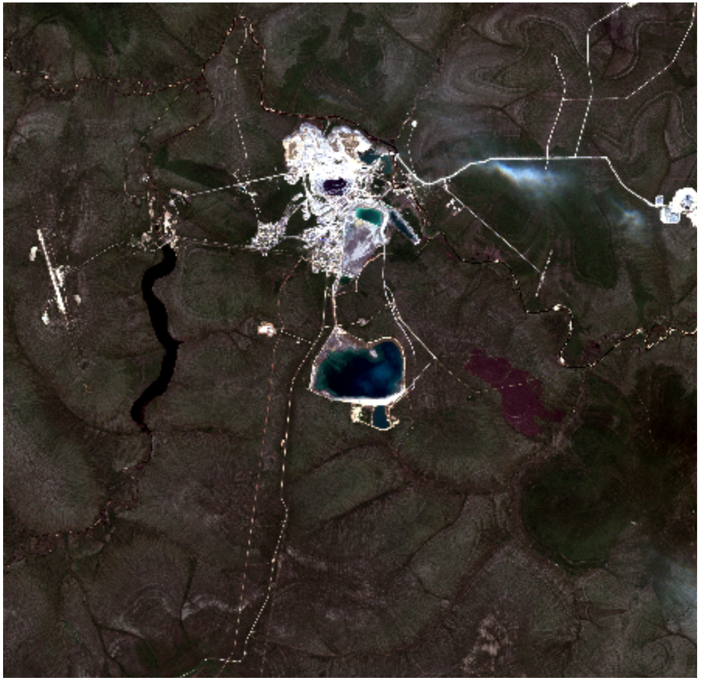
27/06/2023
To delineate land cover classes, synthetic channels NIR-RED-GREEN and SWIR1-NIR-RED were used. A total of 9 object classes were identified:
1. Water bodies
2. Dumps
3. Tailings
4. Built-up areas
5. Larch forest on a plateau
6. Sparse larch woodland
7. Larch forest on peaks
8. Fresh burns
9. Old burns
Visual interpretation produced more classes than the reference samples, because some objects were spectrally similar and complemented each other. The most difficult class to separate was built-up areas, as they were often mixed with dumps. This class also had to combine urban, industrial, quarry, and linear infrastructure elements, since they were similar in brightness.
Table 1. Brightness histograms for each class in six channels (visual summary).
The image histograms show that water bodies have very low reflectance across all channels, while vegetation classes peak in the NIR channel. Built-up areas and dumps show high variance due to mixed compositions.
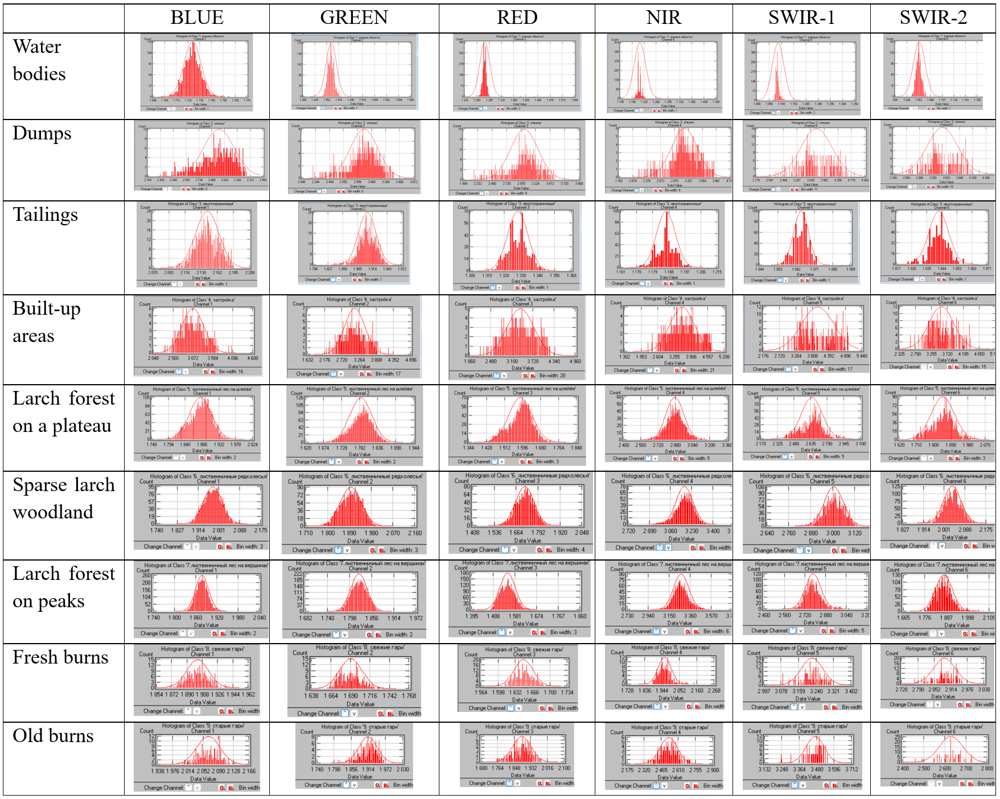
Table 1. Brightness histograms for each class in six channels.
Feature Selection & Separability
Based on the scatter plots and histograms, the best class separability was observed for spectral channels 4, 3, and 2 (NIR-RED-GREEN). Therefore, the classification was performed using these channels.
It was also noted that built-up areas (class 2) and dumps (class 4) showed high dispersion due to brightness variability in the training samples, related to difficulties in their identification. These classes also overlap due to similar spectral signatures.
Classification Methods & Results
1) Minimum Euclidean Distance
Omission and commission errors for individual classes were less than 40%. Minimum accuracy was 63.8% for built-up areas, maximum 100%.
Class distribution: Largest area – sparse larch woodland (48.3%), smallest – tailings (0.8%).
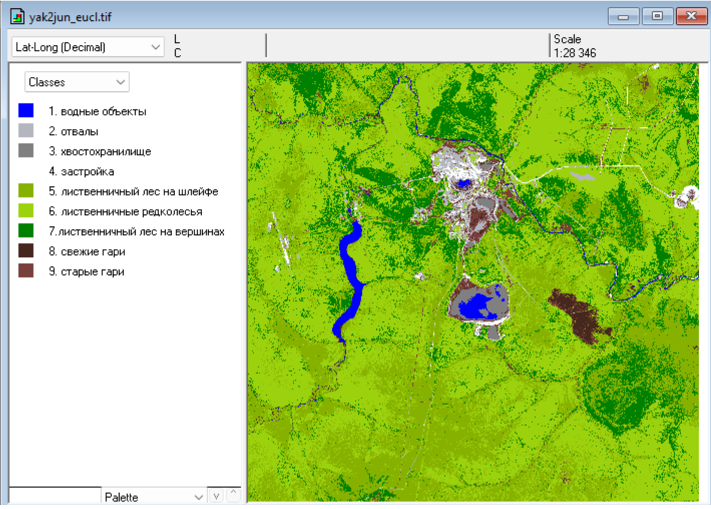
Classification result — Minimum Euclidean Distance.
2) Spectral Angle Mapper (SAM) – Correlation
Omission and commission errors were less than 40%. Minimum accuracy was 66.8% for built-up areas, maximum 100%.
Class distribution: Largest area – sparse larch woodland (41.04%), smallest – tailings (0.77%).
This method also misclassified burns. Built-up areas, the river, and other objects were partially mixed with them.
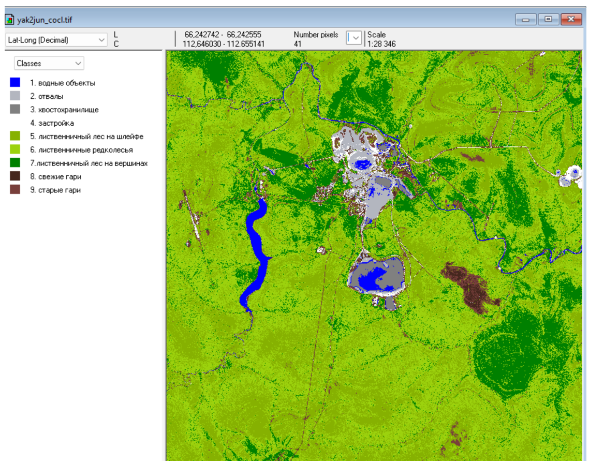
Classification result — Spectral Angle Mapper (SAM).
3) Gaussian Maximum Likelihood
Omission and commission errors were less than 40%. Minimum accuracy was 79.7% for built-up areas, maximum 100%.
Class distribution: Largest area – sparse larch woodland (48.45%), smallest – tailings (0.15%).
This method erroneously identified built-up areas. The river, dumps, and tailings were incorrectly assigned to this class. The map was found to be unreliable despite high accuracy in the error matrix.
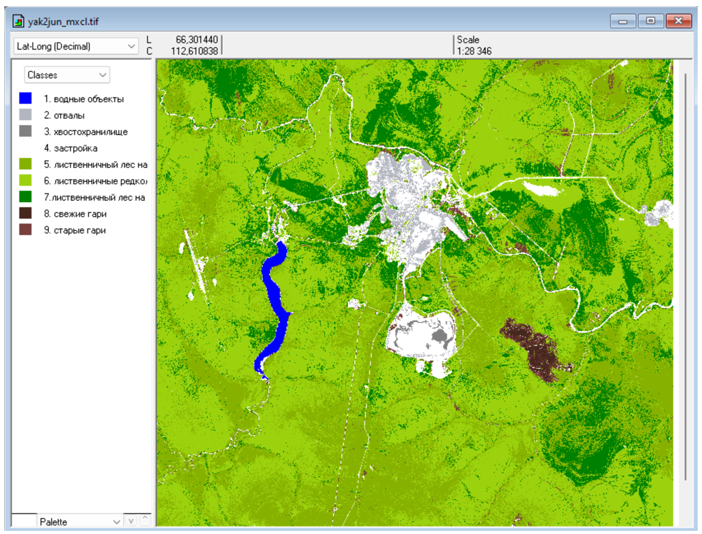
Classification result — Gaussian Maximum Likelihood.
4) K-Nearest Neighbours (KNN)
Class distribution: Largest area – sparse larch woodland (51.31%), smallest – tailings (0.8%).
This method quite plausibly identified various types of objects. Burns appeared less often in river and road areas. A significant drawback is the computation time: 24 minutes and 53 seconds of CPU time for classification.
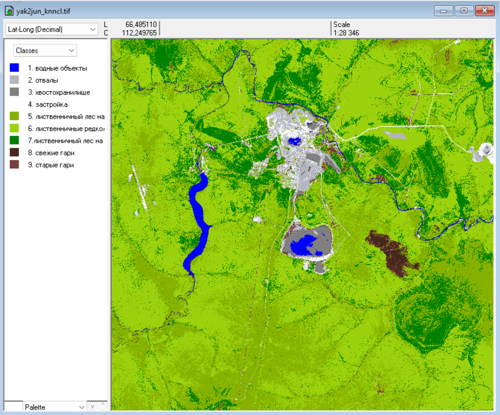
Classification result — K-Nearest Neighbours (KNN).
5) Support Vector Machine (SVM)
Omission and commission errors were less than 40%. Minimum accuracy was 89.5% for built-up areas, maximum 100%.
Class distribution: Largest area – sparse larch woodland (49.28%), smallest – tailings (0.24%).
This method erroneously identified built-up areas. Rocky areas with sparse vegetation, shoulders, tailings, and dumps were included in this class. The map is not entirely plausible.
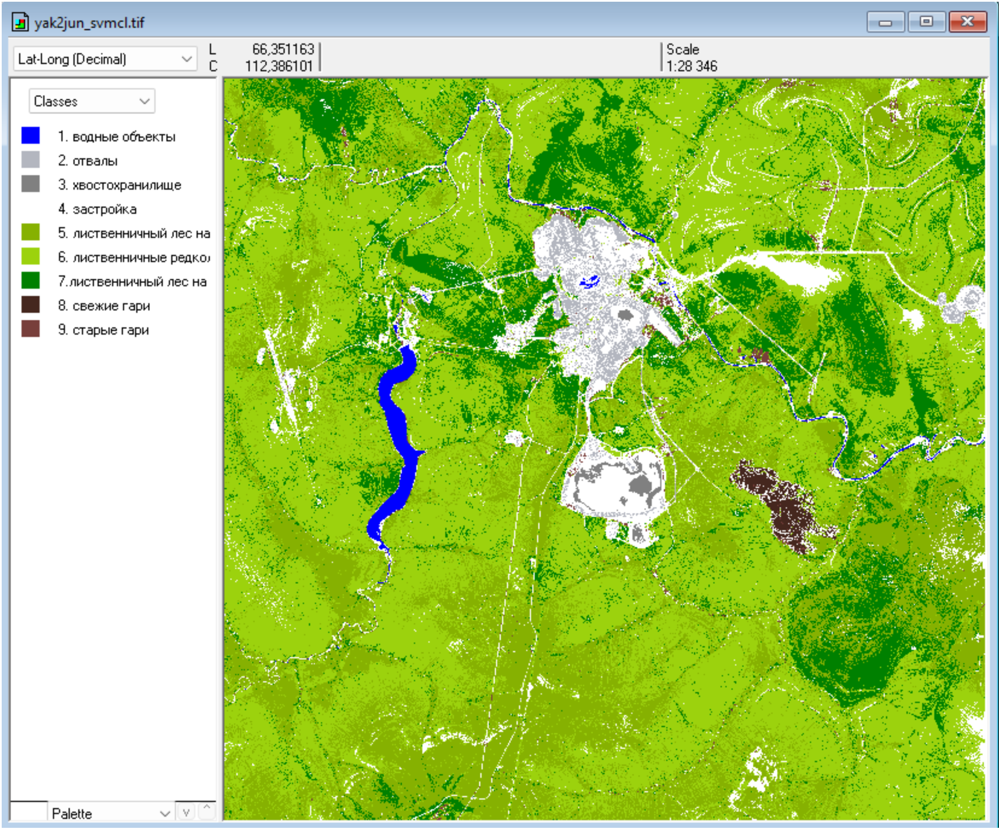
Classification result — Support Vector Machine (SVM).
Conclusion
Across all methods, omission and commission errors were below 40%, and overall accuracy was always above 60%. However, the resulting maps varied and sometimes did not correspond to reality.
The best-performing algorithm was KNN (k-nearest neighbours), which can be recommended for continuous classification. For burn delineation, the Support Vector Machine and Maximum Likelihood methods are preferable.
Vegetation cover (all larch classes) was consistently mapped well across all methods. Built-up areas were always the most problematic class due to sampling difficulties and complex spectral signatures. When using Maximum Likelihood and SVM, the built-up area was excessively large. Water bodies were sometimes mixed with old and new burns and shadows.
The largest area in all methods was occupied by sparse larch woodland, and the smallest by tailings.
Campbell, J.B., Wynne, R.H. Introduction to Remote Sensing. 5th ed. New York: Guilford Press, 2011. – Ch. 7.9–7.17
GIS-Based Land Suitability Analysis
Overview
An end-to-end geospatial workflow for identifying land suitable for an agricultural cooperative within the Speshnevskoye rural settlement (Kuzovatov district, Ulyanovsk Oblast, Russia). The pipeline integrates vector and raster data from multiple authoritative sources and applies multi-criteria spatial analysis to produce a cartographic plan with a recommended land parcel.
Data Sources & Acquisition
Data Layer
Source
Method
Municipal boundary
Rosreestr
rosreestr-search-qgis-plugin (ID 73:00-3.23)
Cadastral quarters & parcels (zu)
Rosreestr
Python: pynspd, rosreestr2coord
Roads, rivers, water bodies
OpenStreetMap
OSM extract
Soils
Unified State Register of Soil Resources
Vector layer
DEM (FABDEM)
Google Earth Engine
Raster export
ZOUIT (special land-use zones)
Rosreestr
pynspd
All layers were reprojected to WGS84 UTM Zone 38N.
Methodology
The spatial analysis was implemented in ArcGIS Pro ModelBuilder (see the workflow diagram below). The model applies a sequence of criteria:
Basic suitability (base_suitable_areas) — agricultural land category + chernozem soils + within 500m of roads.
Exclusion of water protection zones (final_suitable_areas) .
Slope constraint (final_with_dem) — slope < 5° (derived from DEM).
Riparian zone filter (within_river_zone) — 200–1000 m from the river network, outside the water protection zone.
Final exclusion of ZOUIT (final_suitable) — zones with special land-use conditions.
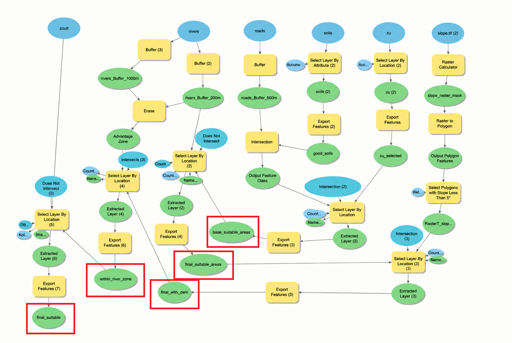
Figure 1. Spatial analysis workflow in ArcGIS Pro ModelBuilder. Final output layers are highlighted in red.
Results
Base suitable areas: 25,934.26 ha
After water protection zones exclusion: 10,525.16 ha
After slope filter: unchanged (terrain is generally flat)
Riparian zone parcels(zu): 6,032.27 ha
Final suitable parcels (zu) (ZOUIT excluded): 3,013.67 ha
The model processed 22 geoprocessing tools in 24 seconds, demonstrating high computational efficiency for a municipal-scale assessment.
From the 38 final parcels, a 37.7 ha parcel (cadastral number 73:06:011301:356) was selected as the most promising candidate: it lies on agricultural land with chernozem soils, is within transport accessibility, outside the water protection zone, and 633 m from the river network — optimal for water supply.
Urban Heat Island Mitigation Strategies — Heliopolis, Cairo
Overview
This project was completed during the two-week intensive summer school "Urban Heat Islands: Understanding the context of climatic, cultural and physical conditions in urban environments" at Bauhaus-Universität Weimar (August 2025). The course explored the Urban Heat Island (UHI) effect from micro- to macro-scale and combined GIS training with urban design. Cairo was the main study case, with a specific focus on the Heliopolis district.
Data & Methods
Land surface temperature (LST) was derived from Landsat 9 Level-2 thermal imagery. The raw thermal band (ST_B10) was converted to °C using the official calibration coefficients:
TEMPERATURE_MULT_BAND_ST_B10 = 0.00341802
TEMPERATURE_ADD_BAND_ST_B10 = 149.0
and -273.15 to transfer to Celcius
The resulting raster was clipped to the Heliopolis boundary, classified, and overlaid with land-use and infrastructure data. Hotspots were correlated with high-traffic roads, extensive asphalt surfaces, and artificial turf on sports stadiums.
Deliverables
1) Heatmap of Heliopolis, Cairo
Land surface temperature map (42.40 – 48.15 °C) with a locator inset and an analysis of the main overheating factors: high traffic volume, extensive asphalt surfaces without shading, and artificial turf retaining more heat than natural grass.
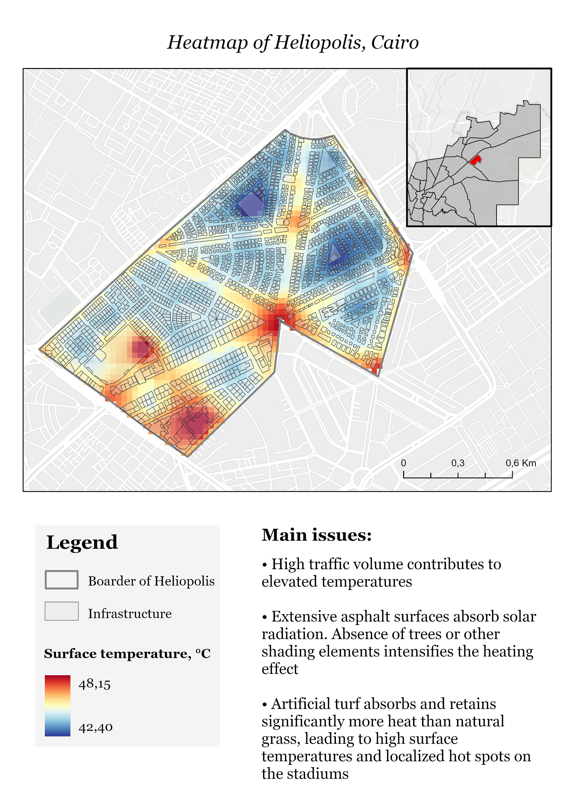
Figure 1. Heatmap of Heliopolis, Cairo — land surface temperature (42.40–48.15 °C).
2) Public Facilities Map of Heliopolis
Land-use and amenity inventory (hospitals, schools, places of worship, sports arenas, banks, etc.) overlaid on the heat layer to assess vulnerability and accessibility of public infrastructure.
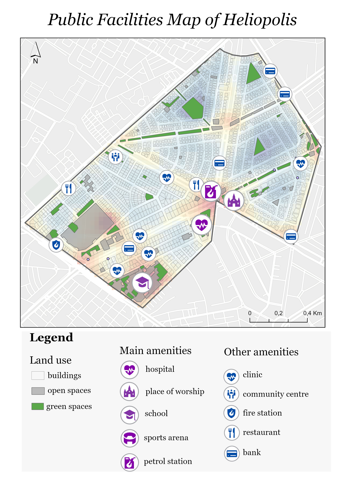
Figure 2. Public Facilities Map of Heliopolis — land use and amenities overlaid on the heat layer.
3) Mitigation Strategies Map
An integrated design proposal combining existing and new green zones, high-albedo pavements, retractable canopies, parking towers, and drinking fountains to reduce heat stress in the most affected areas.
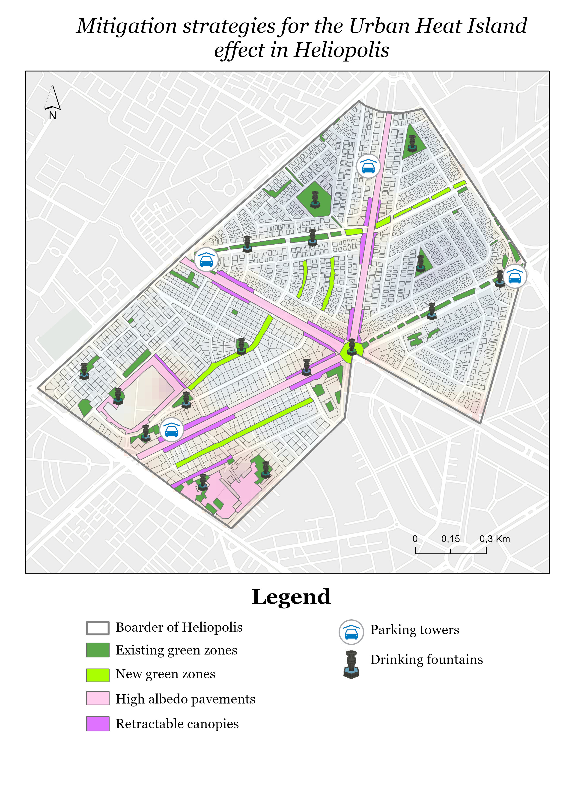
Figure 3. Mitigation strategies for the Urban Heat Island effect in Heliopolis.